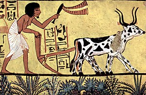
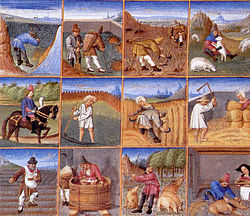

История развития сельского хозяйства
Сельское хозяйство с приручением животных и выращиванием растений появилось, по крайней мере, 10 000 лет назад сперва в регионе Плодородного полумесяца, а затем в Китае. Сельское хозяйство претерпело значительные изменения со времён раннего земледелия. В Передней Азии, Египте, Индии началось первое планомерное выращивание и сбор растений, которые ранее собирали в диком виде. Первоначально сельское хозяйство обеднило диету людей — из нескольких десятков постоянно употребляемых растений для сельского хозяйства пригодной оказывалась небольшая доля.
Независимое развитие сельского хозяйства произошло в Северном и Южном Китае, в Африке — Сахель, Новой Гвинее, части Индии и нескольких регионах Америки. Сельскохозяйственные практики, такие, как орошение, севооборот, удобрения, и пестициды были разработаны довольно давно, но добились больших успехов только в XX веке. Антропологические и археологические свидетельства из разных мест Юго-Западной Азии и Северной Африки указывают на использования диких зёрен около 20 тысяч лет назад.
В Китае, рис и просо были одомашнены в 8000 г. до н. э., с последующим одомашниванием бобовых и соевых. В регионе Сахель местный рис и сорго были местного произрастания к 5000 г. до н. э. Также там одомашнили картофель и батат. Местные культуры были одомашнены самостоятельно в Западной Африке и, возможно, в Новой Гвинее и Эфиопии. Доказательство присутствия пшеницы и некоторых бобовых в 6-м тысячелетии до н. э. были найдены в долине Инда. Апельсины культивировались в те же тысячелетия. Из сельскохозяйственных культур, выращиваемых в долине около 4000 г. до н. э. были, как правило, пшеница, горох, семя кунжута, ячмень, финики и манго. К 3500 г. до н. э. выращивание хлопка и текстиля были достаточно продвинутыми в долине. К 3000 г. до н. э. началось культивирование риса. Тростниковый сахар также начал выращиваться в то же время. К 2500 г. до н. э. рис является важным продуктом питания в Мохенджо-Даро рядом с Аравийским морем. У индийцев были большие города с хорошо оснащёнными зернохранилищами. В трёх регионах Америки независимо друг от друга одомашнили кукурузу, кабачки, картофель, красный перец и подсолнухи. В Юго-Восточной Азии начали выращивать ямс и таро.
Одомашнивание местных животных также продвигалось вперёд: в Китае для вспахивания земли приручили буйвола, а отходы отдавали свиньям и курам, в Юго-Восточной Азии для утилизации отходов и получения удобрения, навоза, начали выращивать коз, свиней, овец и крупный рогатый скот.
Если под сельским хозяйством понимать масштабное интенсивное возделывания земли, монокультуры, организованное орошение, и использование специализированного труда, звание «изобретателей сельского хозяйства» можно присвоить шумерам, начиная с 5500 года до нашей эры. Интенсивное сельское хозяйство позволяет содержать гораздо большую плотность населения, чем при использовании методов охоты и собирательства, а также даёт возможность для накопления избыточного продукта для межсезонья, использования, или продажи/обмена. Возможность фермеров, способных прокормить большое число людей, деятельность которых не имеют ничего общего с сельским хозяйством, стало решающим фактором в появлении постоянных армий.

С XV столетия вследствие европейской колонизации земель по всему миру начался так называемый колумбов обмен. В этот период основу питания простого народа составляли именно продукты местного сельского хозяйства, а сельскохозяйственные культуры и животные, которые ранее были известны только в Старом Свете, были привнесены в Новый Свет, и наоборот. В частности, помидор широко распространился в европейской кухне. Кукуруза и картофель также стали известны широким массам европейцев. Из-за начавшейся международной торговли разнообразие выращиваемых культур снизилось: вместо множества мелких сельскохозяйственных культур земли стали засевать огромными полями монокультур, примером могут служить плантации бананов, сахарного тростника и какао.
С быстрым ростом механизации в конце XIX и XX века тракторы и, позже, комбайны позволили производить сельскохозяйственные работы с ранее невозможной скоростью и в огромных масштабах. Благодаря развитию транспорта и прогрессу в развитых странах население может круглогодично употреблять фрукты, овощи и прочие продукты питания, привезённые из других стран. Тем не менее, разнообразие культур оставляет желать лучшего: по оценкам ООН, среди растительной пищи 95 процентов энергии люди получают от 30 культур.